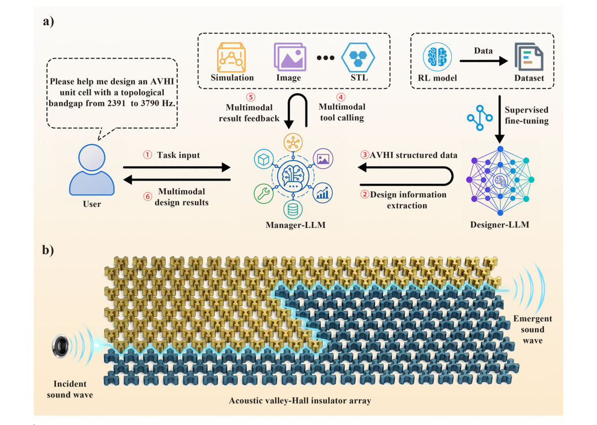

摘要解读
大语言模型驱动的声学谷霍尔绝缘体逆向设计
Large language model-driven inverse design of acoustic valley-Hall insulators
解读更新 2026-10-16 15:05 · 依据公开摘要整理，未核验全文细节
如何把简短的声学设计需求转化为满足目标带隙的结构，并衔接数值验证与模型输出？这项研究以声学谷霍尔绝缘体为对象，用两个分工协作的大语言模型智能体组织逆向设计流程，值得关注的是专业设计能力与任务调度如何结合。
文章目录
从目标带隙出发设计声学拓扑材料
声学谷霍尔绝缘体（AVHI）是一类能够实现稳健定向波传输的声学拓扑材料，在通信、传感和波操控方面具有应用潜力。这里的应用潜力是研究背景，并不等于本研究已经验证了这些场景中的实际效果。
本文关注以目标带隙为导向的逆向设计：根据设计要求生成相应结构，而不只是描述既有结构的声学性质。研究将语义交互、结构设计、数值验证和结果生成纳入统一工作流。
设计模型负责结构，管理模型组织流程
框架由两个协作智能体组成。Designer-LLM使用通过强化学习生成的AVHI数据库进行微调，承担面向目标带隙的逆向设计任务。这里应区分数据库生成与模型微调两个环节，不能将其笼统理解为大语言模型自行学习全部物理规律。
Manager-LLM负责协调任务规划、语义解析、仿真工具调用及多模态结果生成。两个模型的职责不同：前者面向结构设计，后者组织需求理解与工具协作，共同连接用户要求和设计输出。
双智能体逆向设计框架


图解：原图1｜大语言模型驱动的逆向设计框架及声学谷霍尔绝缘体阵列中的声波传输示意。子图a展示框架工作流，其中Designer-LLM根据指定目标带隙生成相应的AVHI结构参数。
原文图注与出处
Fig. 1 | Schematic of the large language model (LLM)-driven inverse-design framework and acoustic wave transport in an acoustic valley-Hall insulator array (AVHI). a Workflow of the proposed LLM-agent framework. The Designer-LLM generates corresponding AVHI structural parameters from specified target band- gaps. The Manager-LLM is responsible for semantic parsing, task planning, and
Wang, Yinchu et al.
原文图页 · CC BY 4.0输出不止结构参数，精度依据来自带隙误差
摘要报告，该框架能够依据简短设计要求生成结构参数、能带结构、本征模态场以及可制造模型文件。因此，其输出不局限于一组结构参数，也包含用于呈现声学特征和后续制造准备的不同形式结果。
对于设计准确性，摘要给出的依据是测试集上的带隙误差分析：微调后的Designer-LLM能够生成具有可靠带隙匹配精度的AVHI结构。不过，摘要未给出具体误差数值，不能据此判断精度提升幅度，也不能将带隙匹配直接等同于所有声学性能均得到验证。
数据集构建与设计模型评估

图解：原图2｜AVHI数据集构建与微调后Designer-LLM的评估。子图a展示不同σ取值下，即时奖励随相邻优化步骤间相对拓扑带隙差的变化；子图b展示即时奖励关于当前及前一优化步骤相对拓扑带隙值的三维曲面；子图c展示数据集中拓扑带隙下、上边缘频率的分布。
原文图注与出处
Fig. 2 | Construction of the acoustic valley-Hall insulator (AVHI) dataset and evaluation of the fine-tuned Designer-LLM. a Variation of the immediate reward with the relative topological bandgap difference between two consecutive optimi- zation steps under different values of σ. b Three-dimensional surface of the immediate reward as a function of the relative topological bandgap values at the current and previous optimization steps. c Distributions of the lower and upper band-edge frequencies of the topological bandgaps in the dataset. d Visualization of
Wang, Yinchu et al.
原文图页 · CC BY 4.0摘要尚不足以界定精度与泛化边界
当前摘要未报告数据库规模、测试集样本数量、数据划分方式、比较基线及误差分布，因此无法据此评估测试覆盖范围或相对其他方法的优势。摘要也不足以界定数值验证的具体条件，以及从模型文件到实际制造、测量的一致性验证范围；这些信息需进一步查阅，不能写成论文没有开展相关工作。
阅读启发：分别审视设计能力与流程组织
阅读启发：对结构生成式设计而言，可以分别关注专业模型能否准确响应目标，以及管理智能体如何把需求、仿真和输出连接起来。进一步阅读时，值得核对带隙误差如何定义、测试目标覆盖哪些范围，以及生成结构如何接受数值检验。
摘要将向其他声学超材料设计任务扩展定位为未来参考，而非已经完成的通用能力。建议带着这一边界阅读：哪些环节能够复用，哪些仍依赖AVHI专用数据库与验证工具，是理解其可迁移性的关键问题。
以上为本站阅读启发与建议，不是论文已验证的结论。